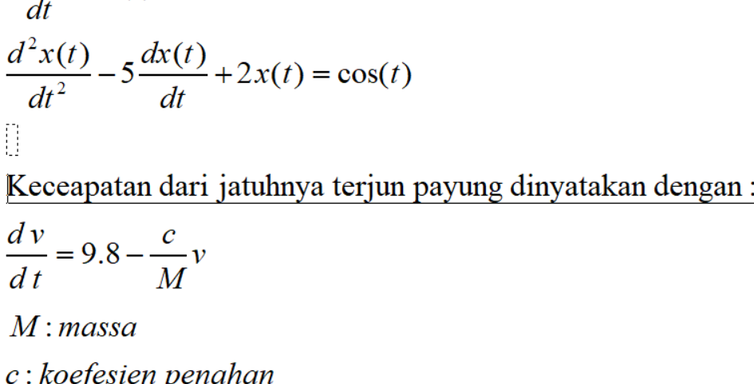
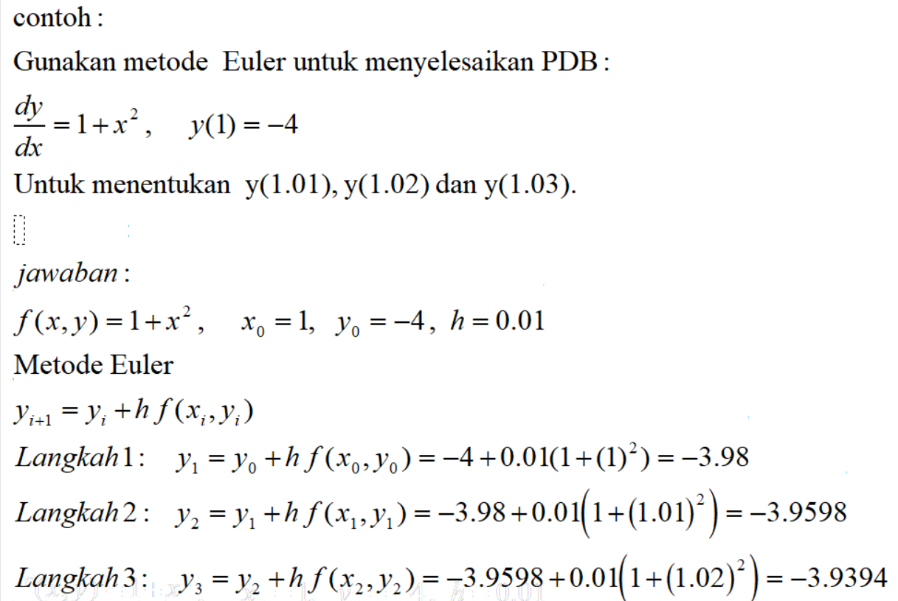
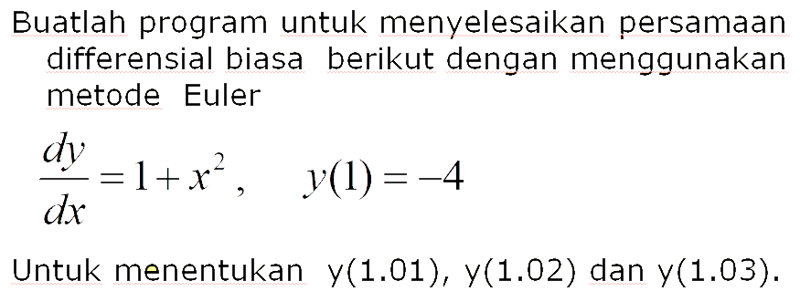

Persamaan deferensial¶
Persamaan Deferensial Biasa¶
Persamaan deferensial biasa dengan satu atau lebih turunan biasa dari fungsi yang tidak diketahui dari variabel bebas.
contoh :

Methode Euler¶
Metode deret Taylor orde pertama dikenal dengan metode Euler (error dari deret Taylor O(h2)). Metode Euler (juga disebut metode forward Euler) adalah prosedur numerik orde pertama untuk menyelesaikan persamaan diferensial biasa (ODE) dengan nilai awal diberikan. Ini adalah metode ekspilit paling dasar untuk integrasi numerik persamaan diferensial biasa dan merupakan metode Runge-Kutta paling sederhana. Metode Euler dinamai Leonhard Euler, yang memperlakukannya dalam bukunya instutionum calcium integralis (diterbitkan 1768-1870).
Metode Euler adalah metode urutan pertama, yang berarti bahwa kesalahan lokal (kesalahan per langkah) sebanding dengan kuadrat ukuran langkah, dan kesalahan global (kesalahan pada waktu tertentu) sebanding dengan ukuran langkah. Metode Euler sering berfungsi sebagai dasar untuk membangun metode yang lebih kompleks, misalnya, metode prediktor-kordiktor.

Contoh Soal :¶

Code Program dengan Python :¶
print("f(x,y)=1+x^2") print("yi+1 = y1 + hf(xi+yi)") x1 = float(input("Masukkan x1= ")) x2 = float(input("Masukkan x2= ")) h = 1.01-x1 #Langsung saya atur sendiri karena yang dicari f(x,y) nilai x-nya=1.01 n=4 #jumlah x ada 4 yaitu 1, 1.01, 1.02, 1.03 xi = -4 hasil = xi y=0 for i in range(n): print("hasil dari y"+str(i)+"= "+ str(hasil)) hasil = xi + h*(1+(x1+y)**2) y+=h xi=hasil
pada bagian pertama terdapat variable x1 adalah x awal dan x2 merupakan x akhir. karena di soal terdapat nx=3 yaitu x0=1, x1=1,01, x3=1,02 x2=1,03 maka h= xn-x0/n, hasilnya h = 0.01.
xi adalah hasil awal yang kemudian akan dimasukkan pada prosess iterasi. Karena rumus eurel adalah y1 = y0 +h(f(x,y)) maka rumus barunya adalah y1=y0+h(1+x^2). variable y digunakan untuk penambahan nilai x agar selalu bertambah 0.01.
Run :¶
f(x,y)=1+x^2 yi+1 = y1 + hf(xi+yi) Masukkan x1= 1 Masukkan x2= -4 hasil dari y0= -4 hasil dari y1= -3.98 hasil dari y2= -3.959799 hasil dari y3= -3.9393949999999998